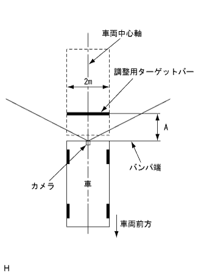
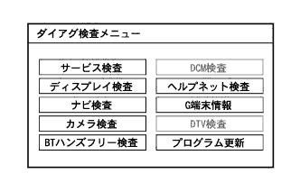
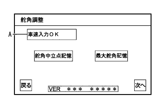
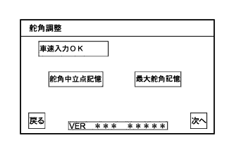
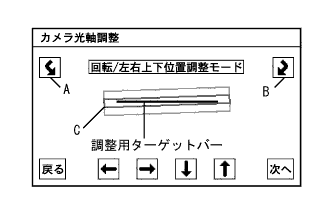
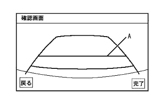

Diagnodes mode activation and cancellation (the point is reference)
reference)
Service inspection (the point isreference)
- □ Participation □
- Check the connection status of each ECU and the output of the diag code.
Back Guide Monitor System Diasground System |
If the screen is displayed on the screen by removing the battery terminal (a battery terminal removal, a connector of a steering sensor), etc., "System Initialization" is displayed on the screen, and one of the following operations is performed to correct the shift of the rudder angle neutral.
Method 1 ················································································································································································································································
Method 2 ·····································································································································································································································································································Then stop the vehicle and check if the neutral point has been learned.If you are not learning, repeat the procedure again.
Display due to causes other than shift of the rudder angle neutral
If the mounting angle of the steering wheel is shifted, when the steering wheel is straightened, the width extension and the expected course shift.
When the camera optical axis adjustment is not correctly adjusted, the extension of the vehicle width and the predictable course shift.
Diagnodes mode activation and cancellation (the point isreference)
Service inspection (the point isreference)
|  |
Preparation before adjustment
Stop the vehicle with the steering wheel in a straight line.
Install the adjustment target bar at the position of the figure.
|  |
Diag activation
Make the engine ON (engine start state).
Start diagnostic.(The point isreference)
Select "Camera Inspection" on the diagram test menu screen.
|  |
Vehicle signal input confirmation
Confirm the status of the vehicle speed signal (part A) entered in the navigation receiver asser.
If the part A is "car speed input OK" (blue display), proceed to the steering angle adjustment for normal.
In the case of "vehicle speed input checking" (red display), check in accordance with the instructions of the symptom -specific list [vehicle speed signal inspection result].(The point isreference)
|  |
Red angle adjustment
Confirm that the steering wheels of the vehicle are in a straight position (almost straight ± 5 degrees or less), and press "Red angle in the middle of the steering angle".
After remembering the standing point, turn the steering to the left, then turn it to the right and press the "maximum steering angle memory".When it is pressed, the left and right rudder angle is remembered.(Even if the right is ahead)
|  |
Camera optical axis adjustment
Press A or B switch to rotate C so that it is parallel to the adjustment target bar.
Press the left and right, right and left switch to move the C to the left and right, left, right, up and down, so that the adjustment target bar is in the center of the middle (red frame).
Select "Next".
|  |
A (indicated 1250mm from the bumper edge) and confirm that the adjustment target bar is almost overlapped.Also, when the steering is straight, make sure that the expected course is straight (overlapped with the extension of the vehicle width).
Select "Finish" and return to the diager inspection menu.
Diag end
The release method is turned off the IG switch.Or press the “image quality · erasing” key for 3 seconds or more.
Adjustment confirmation
When the maximum rudder angle memory is performed, the screen is confirmed on the screen that the predictable course is linked to the end of the steering wheel after the diag test is completed.